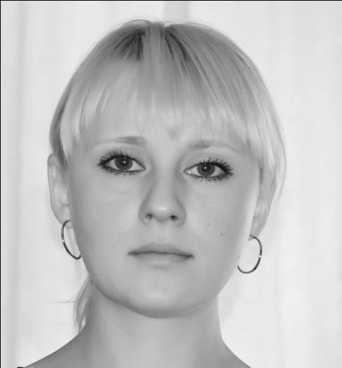
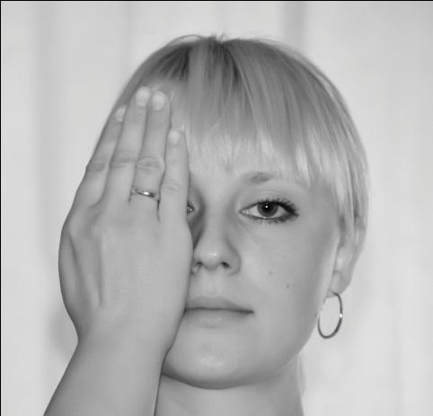
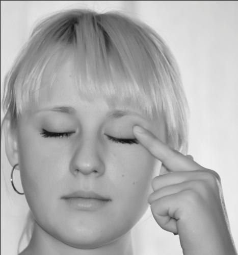

Прежде чем приступить к описанию нашего чудодейственного комплекса для глаз, считаем нелишним повториться, что глаза — это не отдельно существующий орган, а часть единого целого — нашего организма. И если вы не будете приводить в порядок свой позвоночник (который, кстати, напрямую влияет на все органы нашего тела), то устойчивых результатов со зрением вам ждать не стоит.
На первый взгляд может показаться, что комплекс для спины слишком сложен для выполнения, и занимает чересчур много времени. На самом деле это не так. У нас есть пациенты, которым «хорошо за…», и которые приступили к занятиям, не имея возможности самостоятельно передвигаться. Всего лишь через 3 недели эти люди начали ходить сами, а качество их зрения возросло с неописуемой скоростью. Поэтому если вы настроены искать причины, почему вам не стоит заниматься по данной методике — закройте эту информацию и никогда больше к ней не возвращайтесь. Эта методика рассчитана только на активных людей, которые готовы что-то изменить в своей жизни. Причем, не за чужой счет, а САМИ, своими собственными силами.
Если вы думаете, что само прочтение каким-то образом излечит вас — не обольщайтесь. Даже если вы приложите данный диск к вашим глазам или другим органам тела, методика не сработает. Для того чтобы что-то изменить в своей жизни — нужно действие! И действие это должно быть систематичным и планомерным. Иначе — никак!
И еще: после каждого упражнения, подразумевающего какие-то усилия для глаз, необходимо легко-легко поморгать в течение нескольких секунд. Не допускайте перенапряжения глаз и серьезной усталости. Усталость должна быть, но легкая и приятная.
«Дышим глазами». Данное упражнение можно выполнять когда угодно, где угодно и сколько угодно времени. Лучше это делать сидя (спина прямая, но тело максимально расслаблено), либо лежа на спине. Закройте глаза и представьте, что на вдохе прохладный чистый воздух устремляется к вашим глазам, привнося в них отличное зрение, четкость, яркость, контрастность, богатство цветовых оттенков, и все это — без малейшего напряжения.
На выдохе — из ваших глаз уходит все негативное: расплывчатость и тусклость цветов, «мурашки» и черные точки, напряжение и расфокусировка. Дышите так до тех пор, пока выдыхаемый «через глаза» воздух не очистится полностью. После этого наполните ваши глаза теплой золотистой энергией — ее источник вы без труда найдете в своем воображении. Получилось? Отлично! Скажите источнику: «Спасибо» и мысленно отключитесь от него. Открывайте глаза и спокойно принимайтесь за свои дела.
Данное упражнение можно выполнять не только в помещении, но и на улице (только на закате или на рассвете), повернувшись лицом к солнцу. Глаза должны быть закрыты.
Данное упражнение, как и предыдущее, можно делать в любое время суток любое количество раз и сколько угодно времени. Потрите ладони и пальцы друг о друга. Они должны быть интенсивно теплыми. Согните ладони лодочкой и плотно прикройте ими глаза так, чтобы мизинец нижней руки лежал на первых фалангах пальцев верхней руки. Обратите внимание, что у мужчин сверху должна быть левая рука, а у женщин — правая.
Расстояние под согнутыми лодочкой ладонями должно давать вам возможность беспрепятственно моргать. При этом постарайтесь, чтобы ни один проблеск света не попадал под ладони (если не получается, и свет, все же, проникает, — постарайтесь абстрагироваться от него и не реагировать).
Не убирая рук и сохраняя полную темноту под ладонями, дайте вашим глазам максимальное расслабление. Подержите ладони на глазах минимум 50-60 секунд (можно и больше — по вашим ощущениям). Можно при этом и «подышать глазами», если получится. Затем снимите ладони и дайте глазам адаптироваться к свету на протяжении 1 минуты, не открывая их.
Смотрим влево и вправо, максимально заводя взгляд в каждую сторону, но, не поворачивая голову.
Упражнение считается выполненным 1 раз, если вы посмотрели вправо и влево. Повторить 20 раз. После упражнения легко-легко поморгать.
Смотрим вверх-вниз, максимально заводя взгляд в каждую сторону, но, не поднимая и не опуская головы.
Повторить 20 раз. После выполнения — поморгайте.
Данное упражнение – усложненный вариант упражнения 3. Смотрим в крайнюю точку справа, как бы фиксируя взгляд на расположенном в этой точке предмете.
Затем выводим взгляд вперед и представляем, что мы смотрим вдаль, на линию горизонта.
То же самое повторяем в левую сторону и опять вперед. Наша задача — заставить глаза смотреть в ближнюю точку, расположенную в крайних углах слева и справа, чередуя этот взгляд со взглядом вдаль перед собой. Выполнить 20 раз в каждую сторону. После выполнения — поморгать.
Делаем круговые движения глазами, одновременно легко моргая. Диаметр круга — максимально возможный для вас (со временем он будет значительно увеличиваться). Сначала крутим взглядом, рисуя круги в правую сторону, затем — в левую.
Сделайте по 10-20 кругов в каждую сторону (количество зависит от самочувствия — усталости быть не должно).
Рисуем взглядом большие вертикальные восьмерки по 10-20 раз в каждую сторону, одновременно часто и легко моргая.
Можно увеличить размер рисуемой взглядом восьмерки, ведя голову по направлению взгляда.
Аналогично предыдущему, только восьмерки мы рисуем не вертикальные, а горизонтальные. Моргать обязательно. Повторить 10-20 раз.
Данное упражнение выполняется аналогично предыдущему, только вместо скругленных краев горизонтальной восьмерки мы рисуем взглядом углы в крайних точках — как бы, «крылья бабочки».
Повторить 10-20 раз. Не забываем моргать.
Сведение и разведение глаз. Поставьте указательные пальцы двух рук на кончик носа.
Максимально сведите глаза, стараясь зафиксировать взгляд в точке соединения ваших пальцев.
Затем медленно, не меняя уровня (не поднимая и не опуская рук) разведите пальцы в разные стороны и постарайтесь взглядом проследить за их движением. Вы должны увидеть боковым зрением как можно больше деталей справа и слева от вас. Повторите 20 раз.
Затем сделайте то же самое, соединив пальцы на середине переносицы,
а затем — в области «третьего» глаза (в точке между бровей).
Не забывайте моргать в процессе упражнения. Если тяжело делать все три его разновидности подряд — можете прерваться и сделать «пальминг».
Устремите взгляд вдаль (лучше в небо) и напишите движением глаз с максимальной амплитудой ваше имя и отчество (или что-то еще, что вам интересно). Не забывайте часто моргать в процессе упражнения.
Выполняется аналогично предыдущему упражнению, только нужно выписывать слова не только глазами, но и активно помогать себе движением головы. Буквы должны получаться просто огромными. Моргать в процессе обязательно!
Выполняется ясным (не туманным) днем перед закрытым окном (но не зашторенным). На стекло приклейте любую маленькую картинку, на которую вам приятно смотреть. Выберите объект за стеклом — он должен располагаться как можно дальше, но обязательно перед вами, а не сбоку, и вы должны его четко видеть. Встаньте на расстоянии не более 25 см от стекла так, чтобы приклеенная картинка оказалась прямо у вас перед глазами.
Закройте ладонью один глаз, а другим смотрите то на картинку, то на выбранный за окном объект, чередуя «близь-даль» с максимально возможной для вас скоростью.
Делайте по 1-2 минуты для каждого глаза, постепенно (по мере тренировок) увеличивая скорость переключения с близи на даль и длительность проведения упражнения (но не более 5 минут на каждый глаз). Не забывайте моргать и не доводите глаза до сильной усталости. Если чувствуете, что начинаете уставать — прервитесь и сделайте «пальминг».
Данное и все последующие упражнения можно выполнять в любое удобное для вас время. Если вашим глазам нужен отдых в процессе работы за компьютером, эти упражнения станут настоящей палочкой-выручалочкой для вас.
Поставьте указательные пальцы рук на область внутренних уголков глаз и слегка придавите. Промассируйте легкими круговыми движениями эту область. Затем надавите пальцами, немного подержите и отпустите. Поморгайте. Повторите несколько раз. Данное упражнение усиливает кровоток в области ваших глаз и способствует улучшению зрения и очищению слезных каналов.
Данное упражнение выполняется аналогично предыдущему, только указательные пальцы мы устанавливаем в области наружных уголков глаз (там, где на кости глазницы прощупывается выемка).
Аккуратно промассируйте эту область. Затем придавите несколько раз (но не сильно, а слегка — чтобы только усилить кровоток) и отпустите. Поморгайте. Повторите упражнение несколько раз (не доводите до усталости или боли — вам должно быть комфортно).
Данное упражнение объединяет два предыдущих и выполняется сразу на двух глазах в двух точках каждого глаза одновременно. Поставьте средние пальцы рук на внутренние уголки глаз, а указательные — на внешние.
Слегка придавите и промассируйте легкими круговыми движениями. Затем нажмите-отпустите несколько раз, чтобы усилить кровоток и еще раз промассируйте. Выполняйте с сохранением ощущения комфорта.
После того, как вы с этим справились, зажмите пальцами уголки глаз и чуть-чуть сильнее придавите пальцами внешние уголки. Получилось? Отлично! Удерживая пальцами уголки глаз, и не давая коже растягиваться и морщиться, прищурьтесь, не зажмуриваясь, — сильно напрягите мышцы вокруг глаз, затем отпустите (ваши пальцы должны почувствовать напряжение и дрожание мышц под ними). Повторите 15 раз. На последнем разе зафиксируйте «прищур» и в точке наивысшего напряжения подержите несколько секунд. Отпустите пальцы и поморгайте. Данное упражнение поможет не только снять усталость с глаз, но и восстановить кровоток в мышцах, улучшить зрение и убрать морщины вокруг глаз. Можно добавить к процессу выполнения данного упражнения движение зрачками — тогда напряжение будет перемещаться по разным областям вокруг глаз, и мышцы проработаются гораздо интенсивнее.
В данном упражнении мы продолжаем усиливать кровоснабжение глазного яблока (что влечет за собой улучшение зрения) и избавляемся от морщин в области вокруг глаз.
Прежде чем приступить к выполнению данного упражнения, хорошенько потрите ладони и пальцы рук друг о друга. Почувствуйте прилив тепла к вашим ладоням и пальцам. Упражнение выполняется средними пальцами рук, но при этом ладонь должна быть собрана (не растопыривайте пальцы).
Это необходимо для того, чтобы ваша целительная энергия, которая будет струиться из указательных и безымянных пальцев, напитывала ваши глаза и помогала им восстанавливаться гораздо быстрее, чем при одном «контактном» воздействии.
Итак, ставим средние пальцы собранных ладоней на область соединения скулы и переносицы и аккуратно массируем легкими надавливающими движениями.
Затем перемещаем руки на середину скулы и массируем эту точку.
То же самое делаем и с крайними наружными точками скул (чуть ниже наружных уголков глаз) и там тоже тщательно массируем. Не забываем моргать и чувствовать себя победителем. Повторяйте упражнение столько раз, сколько вам комфортно.
Требования к подготовке к данному упражнению — такие же, как и к предыдущему.
Только массировать мы будем указательным пальцем правой руки область «третьего глаза» — точки между бровей . Здесь надавливание должно быть сильным (даже немного болезненным). Внимание! Ладонь должна быть собрана, как в упражнении 17!
Массируем данную область, представляя, как ваше зрение становится все лучше и лучше. В конце упражнения можно снять надавливание, отвести пальцы от данной точки не более чем на 1 см и представить, как из кончиков пальцев в область «третьего глаза» струится золотистая здоровая энергия.
Внимание! Область мозга мыслями не затрагиваем! Работаем только с точкой между бровей! Если выполнять данное упражнение регулярно, улучшится не только зрение, но и интуиция.
Массаж начала височных швов. Находим ямки за наружными уголками глаз (там, где заканчиваются скулы и начинаются виски) — если точки выбраны правильно, то даже при легком надавливании должно становиться больно.
Указательными пальцами слегка придавливаем эти точки (до сильной боли не доводите, иначе рискуете спровоцировать приступ головной боли) и начинаем массировать легкими круговыми движениями. Сделать по 8-10 кругов в каждую сторону. Не забываем моргать и чувствовать себя победителем.
Данное упражнение поначалу выполняется для каждого глаза отдельно, а затем — для обоих глаз одновременно. Разогрейте руки, потерев ладони друг о друга.
Закройте глаза и указательным пальцем через веко прижмите наружный уголок глазного яблока так, чтобы под закрытым веком вы увидели блик (нажатие должно быть достаточно сильным, но мягким).
Отпустите и поморгайте до полного восстановления видимости.
Повторите это с верхними частями глаз (прижимаем именно само глазное яблоко, а не кость глазницы) и нижней частью глазного яблока.
Зрачки не трогаем! Не переусердствуйте — как только появился блик, — отпускайте нажатие, открывайте глаза и часто-часто моргайте. Проще всего данное упражнение делать в темноте — тогда блик виден более четко. Повторите по 3-5 раз для каждой точки нажатия.
Для выполнения данного упражнения вам понадобится распечатанная таблица, которую мы даем ниже. Внимание! Моргание в данном упражнении — это основное действие. Часто-часто моргая, подносим таблицу к своим глазам на максимально близкое расстояние (не более 20 см).
Не переставая моргать, стараемся «навести резкость» и прочитать все, что там написано. Запомните вашу точку «невидимости» — то место, которое вы не можете прочитать или читаете с большим дискомфортом. В следующие разы эта точка будет уже другой — вы сами увидите прогресс. Повторяйте данное упражнение 3-5 минут.
Данное упражнение, как и предыдущее, выполняется с таблицей, которую вы найдете ниже. Вытяните руку с таблицей прямо перед собой, и, часто-часто моргая, постарайтесь «навести резкость» и прочитать ее всю.
Сделайте то же самое и отводя руку в сторону. Запомните точку «невидимости».

Повторяйте упражнение по 5-7 минут.
Это упражнение можно делать только людям до 35 лет. Если вам больше 35 лет — замените его упражнением 16.
На выдохе с силой зажмурьтесь, подержите напряжение в течение нескольких секунд.
И после этого с силой «вытаращитесь». Повторите упражнение 5-7 раз.
Данное упражнение поможет вам расслабить глаза и напитать их вашей целительной энергией. Потрите ладони друг о друга. Закройте глаза, совместите указательный и средний пальцы рук и поднесите их к вашим зрачкам.
Не дотрагивайтесь, а на максимально близком расстоянии просто «погрейте» ваши глаза пальцами, представляя, как теплая и чистая энергия струится из пальцев и омывает ваши глаза. На выдохе — из ваших глаз уходит все плохое. На вдохе — через пальцы в ваши глаза течет чистая здоровая энергия. Подышите так 2-3 минуты.

Данное упражнение выполняется аналогично предыдущему, только мы подносим к зрачкам не указательный и средний пальцы, а наружные суставы больших пальцев.
Поначалу, пока вы освоите систему, весь этот комплекс упражнений нужно выполнять каждый день. Как только вы освоите его полностью, все занятия не будут у вас отнимать более 40 минут. Не слишком большая плата за отличный результат, не правда ли?
-
Выполнение данного комплекса теперь будет идти несколько иначе. Вы будете делать его и зарядку для позвоночника по три дня подряд, после чего будет следовать 1 день перерыва. В этот день можно делать все только на мысленном уровне и/или выполнять дыхательные медитативные упражнения.
В первый день выполняете весь комплекс, начиная с упражнений для позвоночника и заканчивая упражнениями для глаз, именно так, как описано выше.
Во второй день комплекс для спины делаем без изменений, а комплекс для глаз выполняем полностью с закрытыми глазами. Это поможет вам сделать легкий массаж радужки и зрачков, и усилит эффект от выполнения упражнений.
В третий день комплекс для спины остается неизменным, а комплекс для глаз (кроме упражнения у окна — его мы выполняем с открытыми глазами) делаем, прикрыв глаза руками так, чтобы вы кончиками пальцев чувствовали движения зрачков. Но не давите! Все должно быть приятно! Перед выполнением данного комплекса руки необходимо разогреть, потерев их ладонями друг о друга. Это поможет вам напитать ваши глаза вашей собственной созидательной и целительной энергией, и сделать более интенсивный очищающий массаж радужки и зрачков.